代码、结果与复现目录
本报告对应的层分析已经整理到仓库中的 experiment/BigBrainLayer。该目录将分析程序、关键数值结果、投稿图和报告放在同一处，便于在不依赖本次交互环境的情况下审阅和复现。
- code/：八分支比较、重新闭合、空间旋转检验、精确层序置换、分层解释和绘图程序；
package_snapshot/保存本次分析实际依赖的层数据、组成变换和统计模块快照。 - results/baseline/：原始八分支比较及审计；results/reclosure/：重标记后重新闭合作为主分析的结果；results/permutation_corrected/：精确层序置换及修正后的统计表。
- figures/：本文结果段候选图的PNG、SVG和PDF版本；report/：本综合报告及全部本地依赖。
主分析采用跨层归一化、脑区重标记后重新闭合、不进行中心化对数比变换、相对层厚度、1,000次空间旋转和全部720种层序排列。主分支在97个mask允许的层–细胞类型组合中得到31个空间旋转后显著结果；整体层序匹配精确检验为4/720，p=0.005556。未重新闭合的连续特征结果保留为敏感性分析。
{kind=link}
跨物种细胞组成与人脑皮层分层厚度的空间关联
HomoloMap跨物种映射 · Brainnetome 105个皮层区域 · 主分析、敏感性分析与可解释预测
审阅摘要
研究目的：检验猕猴空间转录组所描述的细胞类型空间分布，经转录同源关系和脑区空间映射后，是否与人脑BigBrain六个皮层层次的厚度分布存在系统关联。
主分析：先在猕猴D99空间中按“同一细胞类型跨六层”的比例归一化，再映射到人脑Brainnetome（BN）图谱；映射后重新闭合比例；不进行中心化对数比变换（CLR）；厚度使用每个脑区内六层相对厚度。
主要发现：在外部生物学mask保留的97个“层–细胞类型”组合中，31个关联通过分支内Benjamini–Hochberg假发现率校正（q<0.05）；平均绝对相关系数为0.4576。六层标签的精确置换检验显示正确层序对应显著优于错配（720种排列，p=0.005556）。
稳健性：relabel后闭合与未闭合连续特征的效应高度一致（Pearson r=0.9997；Spearman ρ=0.9997；显著集合Jaccard=1.00），但闭合版本具有更明确的成分数据解释，因此作为主结果。
结论边界：结果支持空间共变与层特异对应，不证明细胞类型导致皮层厚度变化。ROI是空间单元，不是独立受试者。
1. 研究问题与证据链
本分析检验：由猕猴层空间转录组估计并映射到人脑的细胞类型空间分布，是否与 BigBrain 六层厚度呈层特异的空间对应。证据链依次包括特征构建顺序验证、八个 preprocessing 分支的公平比较、空间旋转检验、六层标签精确置换，以及留出 ROI 的预测与 SHAP 贡献分解。
一句话论点：与层内细胞类型平衡相比，同一细胞类型在六层间的相对分配更能解释人脑层厚度的空间组织，但这一关联依赖特征构建顺序、跨物种映射和外部层存在 mask，不构成细胞类型对层厚度的因果证明。
数据对象与分析流程（详细说明）
数据来源与分析单位
细胞组成来自猕猴空间转录组。原始226个细胞类型中，191个具有可用的转录同源映射，35个未解析类型被记录并排除，最终聚合为23个细胞亚类。人脑表型来自BigBrain六层组织学厚度；两类数据对齐至Brainnetome图谱的105个皮层区域。
为什么先归一化、再relabel、再reclosure
“within-layer”回答同一皮层层内不同细胞类型如何构成；“within-region cross-layer”回答给定细胞类型在同一脑区六层之间如何分配。主问题关注细胞类型的层间配置，因此选择后者。空间relabel是加权汇总，会因源区覆盖度和权重使总和偏离1，所以映射后必须再次reclosure。该步骤恢复成分解释，同时不改变组分间的相对关系。映射审计发现D99标签106、118和194没有目标对应，报告中持续保留这一atlas覆盖风险。
为什么主分析不用CLR
CLR适合分析“一个封闭组成内部各成分相对于几何均值的变化”。但跨层归一化后，研究对象已是每个细胞类型在六层中的分配；随后按单层对23个细胞类型做CLR，会把问题改写成层内细胞类型平衡。八分支结果显示这种改写在主设置下减少显著发现，因此主分析保留原比例，CLR作为敏感性分支。
厚度的两种表达
绝对厚度保留脑区总体尺度差异；相对厚度把每个ROI的六层厚度除以总皮层厚度，聚焦层间构成。相对厚度与跨层细胞分配在统计对象上更直接对应，因此在有整体层序证据且局部关联更强时被选为主分析。
空间相关、FDR与整体置换
每个生物学mask保留的层–细胞类型组合在105个皮层区域上计算Pearson相关，并以1,000次Alexander–Bloch皮层旋转构建空间零分布，获得双侧p值。每个分析分支内部对97个有效组合执行Benjamini–Hochberg校正；八个分支之间不再进行第二层校正，因此跨分支差异用于评价方法敏感性，而不作为八次独立验证。整体层序检验枚举六层的6!=720种排列，以所有有效组合的平均相关作为统计量，采用单侧greater检验；由于完整枚举已包含观测identity，精确p值按极端排列数除以720计算。
预测与SHAP优势分析
预测模型采用五折交叉验证的岭回归，每个脑区的预测均由未包含该脑区的训练数据产生。标准化只在各训练折拟合，避免测试信息泄漏；正则化强度在10−3至103的25个候选值中选择。随后以SHAP值汇总23个细胞类型的绝对预测贡献，并进一步聚合至兴奋性、抑制性和非神经元类别。该结果反映模型对各类特征的依赖程度，不能单独作为生物学因果证据。
2. 前置验证：归一化与 relabel 的顺序
比较三种特征构建策略：D99 中先计算 ratio 再以 mean 映射至 BN；counts 先以 sum 映射至 BN 再计算 ratio；counts 先以 mean 映射至 BN 再计算 ratio。统计比较只纳入外部结构性 mask 标记为存在的97个 layer–cell-type pairs，41个 mask=False 组合在相关计算前排除。
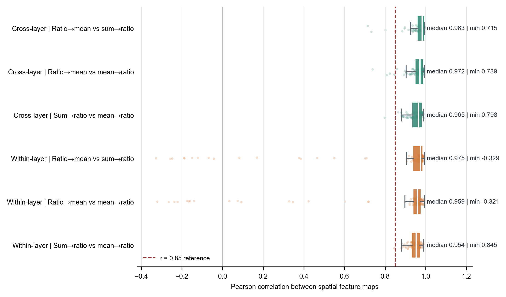
| 归一化方向 | 策略比较 | n | minimum r | 5%分位 | median r | mean r | r<0.85 |
|---|---|---|---|---|---|---|---|
| 跨层 | ratio→mean vs sum→ratio | 97 | 0.715 | 0.893 | 0.983 | 0.966 | 4 |
| 跨层 | ratio→mean vs mean→ratio | 97 | 0.739 | 0.885 | 0.972 | 0.959 | 4 |
| 跨层 | sum→ratio vs mean→ratio | 97 | 0.798 | 0.886 | 0.965 | 0.953 | 1 |
| 层内 | ratio→mean vs sum→ratio | 97 | −0.329 | −0.158 | 0.975 | 0.820 | 17 |
| 层内 | ratio→mean vs mean→ratio | 97 | −0.321 | −0.169 | 0.959 | 0.811 | 17 |
| 层内 | sum→ratio vs mean→ratio | 97 | 0.845 | 0.899 | 0.954 | 0.949 | 1 |
代表性空间图
以下各图使用HomoloMap绘图接口，以Surfplot将105个BN ROI映射至fsLR inflated surface。同一案例共享色标，未平滑、未插补。
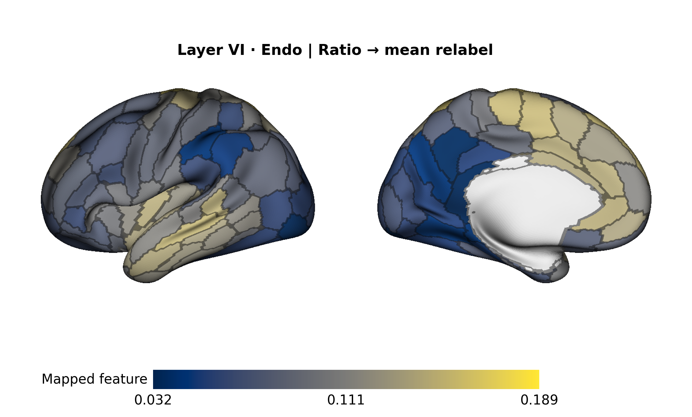
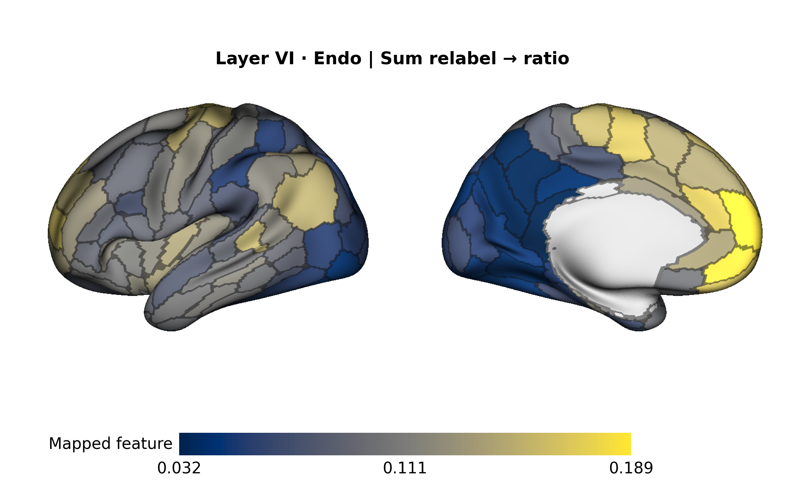
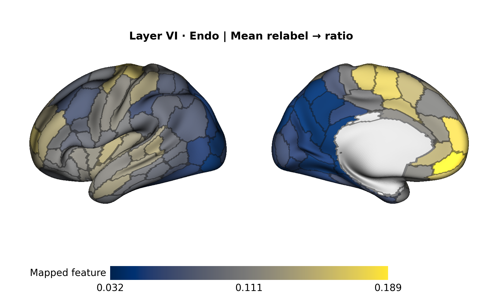
Layer VI–Endo 是跨层方向最低一致性案例：ratio→mean 与后两者的 r 分别为0.715和0.739，两个 relabel 后归一化流程之间为0.880。
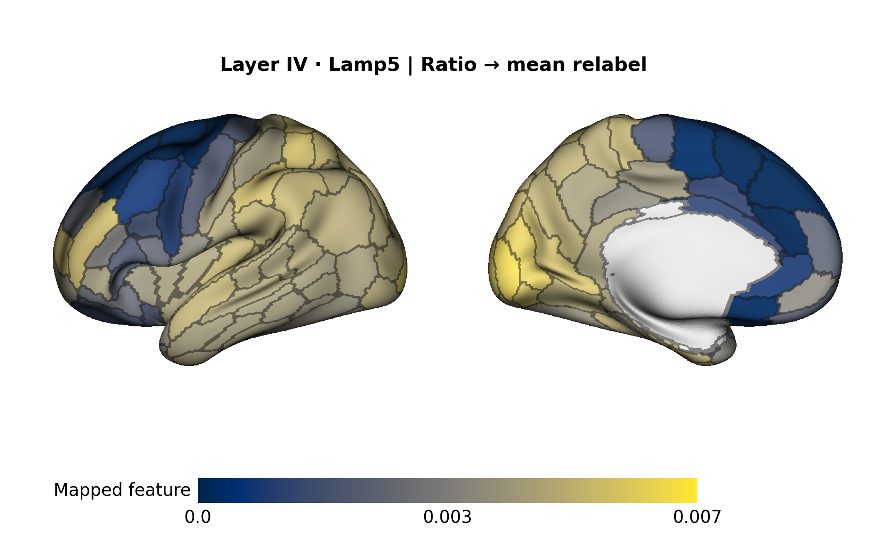
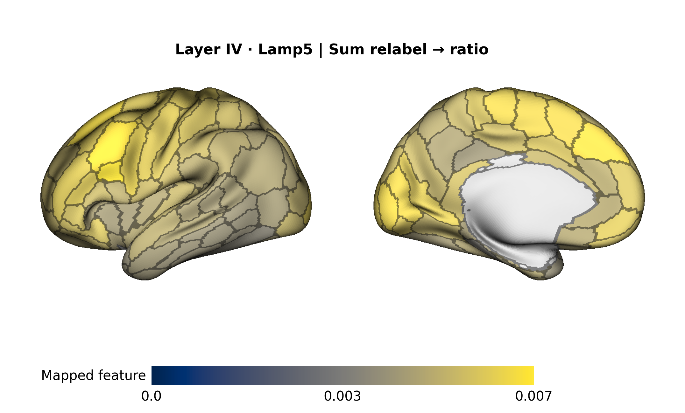
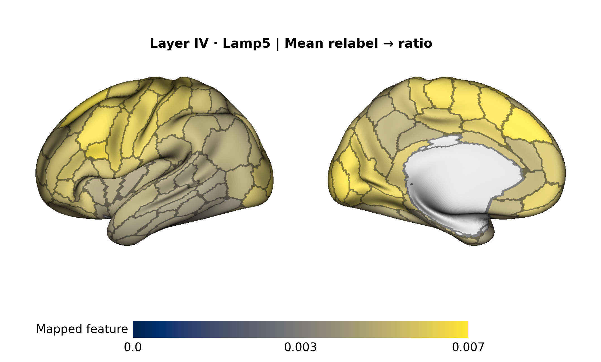
Layer IV–Lamp5 是层内方向最敏感案例：ratio→mean 与后两者呈负相关（r=−0.329、−0.321），而两个 relabel 后归一化流程高度一致（r=0.948）。
3. 八分支设计与统计方法
固定D99来源空间归一化后以mean进行D99→BN连续特征映射，比较两种归一化方向（层内、同一细胞类型跨层）、CLR开关和厚度尺度（绝对、相对），共8个分支。所有分支共享23个subclass、105个ROI、97个mask后检验、seed=42及同一组1,000次Alexander–Bloch空间旋转。
局部空间检验
每个有效layer–cell-type pair计算Pearson r及spin p值。随后在该分支全部97个有效p值上一次性执行Benjamini–Hochberg校正，阈值q<0.05。未对8个pipeline之间再做第二层多重校正。
整体层序检验
枚举六层标签的6!=720种排列，以全部有效关联的平均r作为统计量，检验正确层对应是否位于单侧零分布右尾。经验p采用(extreme+1)/(n+1)。identity排列在720种精确枚举中只计数一次。
此外，五折留出ROI的RidgeCV评估空间外推预测；SHAP仅描述模型预测中的特征贡献，不是显著性检验，也不支持因果解释。
3.1 目标空间reclosure与未闭合连续特征的一致性
reclosure在完整组成上执行，mask只控制统计检验。跨层四个分支的闭合前后效应Pearson相关均≥0.9996，FDR显著集合Jaccard均为1.00；主要变化集中在层内无CLR分支。层内+无CLR+相对厚度由0项增加至8项FDR发现，但整体层序仍不显著（p=0.131944），因此没有取代跨层主分支。
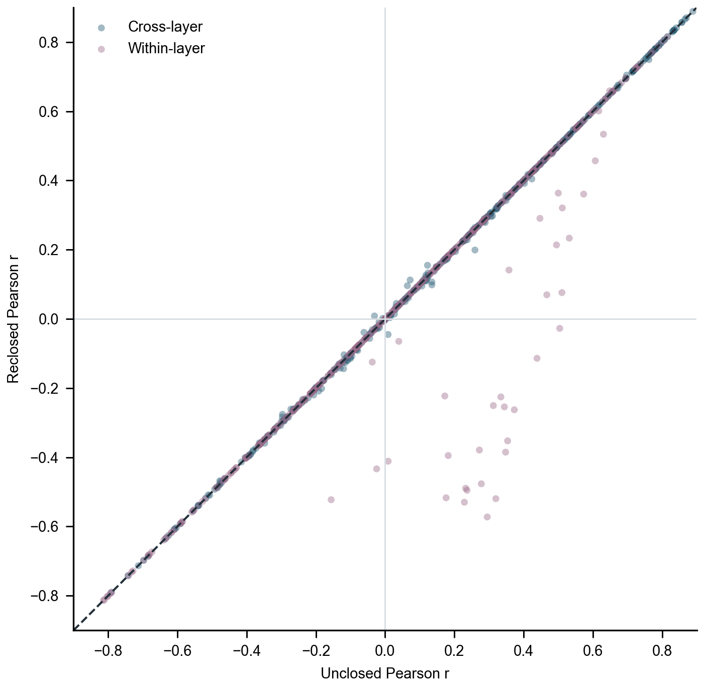
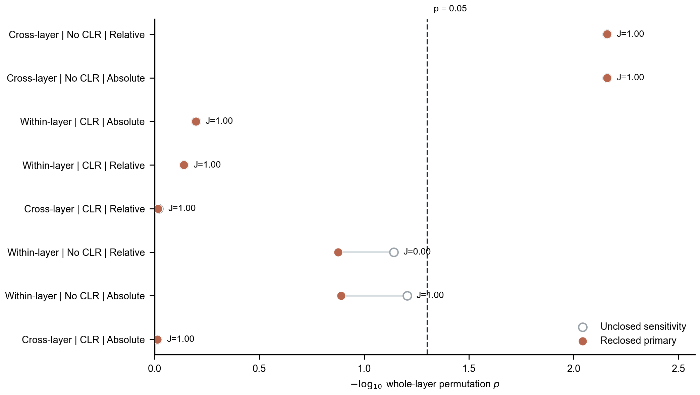
| 分支 | 效应Pearson r | 效应Spearman ρ | 显著集合Jaccard | FDR数：未闭合→闭合 | mean |r|：未闭合→闭合 | whole p：未闭合→闭合 |
|---|---|---|---|---|---|---|
| 跨层 / 无CLR / 相对 | 0.9997 | 0.9997 | 1.00 | 31→31 | 0.4583→0.4576 | 0.005556→0.005556 |
| 跨层 / 无CLR / 绝对 | 0.9999 | 0.9999 | 1.00 | 21→21 | 0.4086→0.4085 | 0.005556→0.005556 |
| 层内 / CLR / 绝对 | 1.0000 | 1.0000 | 1.00 | 14→14 | 0.3578→0.3578 | 0.636111→0.636111 |
| 层内 / CLR / 相对 | 1.0000 | 1.0000 | 1.00 | 13→13 | 0.2892→0.2892 | 0.726389→0.726389 |
| 跨层 / CLR / 相对 | 0.9996 | 0.9991 | 1.00 | 11→11 | 0.2973→0.2971 | 0.958333→0.965278 |
| 层内 / 无CLR / 相对 | 0.8310 | 0.8090 | 0.00 | 0→8 | 0.2704→0.2764 | 0.070833→0.131944 |
| 层内 / 无CLR / 绝对 | 0.8227 | 0.8368 | 1.00 | 4→4 | 0.3505→0.3422 | 0.061111→0.127778 |
| 跨层 / CLR / 绝对 | 0.9998 | 0.9995 | 1.00 | 2→2 | 0.2784→0.2788 | 0.970833→0.972222 |
3.2 精确置换实现审计与校正
whole-match校正。六层标签共有6!=720种完整排列，观测identity已经包含其中。原实现仍使用Monte Carlo抽样所需的“+1”估计，等于把观测排列重复计数一次。校正后采用 extreme / 720；主分支有4个排列达到或超过观测统计量，因此p由5/721=0.006935改为4/720=0.005556，整体层序结论保持显著。
mismatch校正。原实现为每个层–细胞类型组合枚举600个错配排列，但单个组合实际只有5个不同的目标层，每个目标被重复120次。校正后使用5个唯一错层相关，加上观测匹配构成6个等权指派，精确p为(1+k)/6。其最小可能p为1/6，因此原报告中的pair级mismatch FDR发现不成立；八个分支校正后均为0项。该变化不影响基于1,000次空间spin的97项局部关联，也不影响whole-match整体层序证据。
| 分支 | 原whole p | 校正whole p | 原mismatch FDR | 校正mismatch FDR |
|---|---|---|---|---|
| 跨层 / 无CLR / 相对 | 0.006935 | 0.005556 | 38 | 0 |
| 跨层 / 无CLR / 绝对 | 0.006935 | 0.005556 | 37 | 0 |
| 层内 / CLR / 绝对 | 0.636616 | 0.636111 | 16 | 0 |
| 其余五个分支 | 结论均不显著 | 结论均不显著 | 12–18 | 0 |
4. 八分支结果：reclosure主分析
八分支表格的阅读方法
八个分支来自三个二元选择：①层内归一化或同一细胞类型跨层归一化；②使用或不使用CLR；③绝对或相对厚度。n FDR表示97项局部检验中q<0.05的数量；mean |r|描述典型效应强度但不区分方向；whole p检验整体正确层序是否优于错配。不能只按显著数量选模型：最终选择同时考虑研究问题匹配、整体置换证据、效应强度、闭合合理性和预测稳定性。
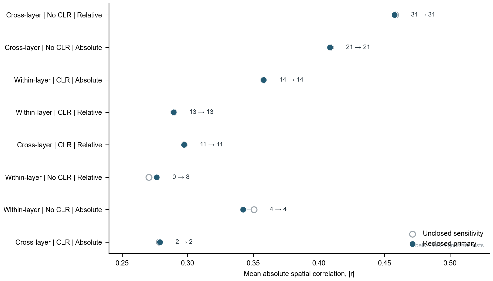
| 归一化 | CLR | 厚度 | FDR q<.05 | mean |r| | median |r| | whole stat | whole p | 六层平均OOF R² | 六层平均SHAP首位 |
|---|---|---|---|---|---|---|---|---|---|
| 跨层 | 否 | relative | 31 | 0.4576 | 0.4485 | 0.4174 | 0.005556 | 0.521 | Chandelier |
| 跨层 | 否 | absolute | 21 | 0.4085 | 0.4265 | 0.3457 | 0.005556 | 0.608 | L6b |
| 层内 | 是 | absolute | 14 | 0.3578 | 0.3590 | -0.0789 | 0.636111 | 0.618 | L5/6 NP |
| 层内 | 是 | relative | 13 | 0.2892 | 0.2324 | -0.0234 | 0.726389 | 0.540 | L5/6 NP |
| 跨层 | 是 | relative | 11 | 0.2971 | 0.2812 | -0.0257 | 0.965278 | 0.513 | L5 IT |
| 层内 | 否 | relative | 8 | 0.2764 | 0.2254 | 0.0687 | 0.131944 | 0.558 | L5 ET |
| 层内 | 否 | absolute | 4 | 0.3422 | 0.3481 | 0.1171 | 0.127778 | 0.596 | Pvalb |
| 跨层 | 是 | absolute | 2 | 0.2788 | 0.2607 | -0.0215 | 0.972222 | 0.598 | L6b |
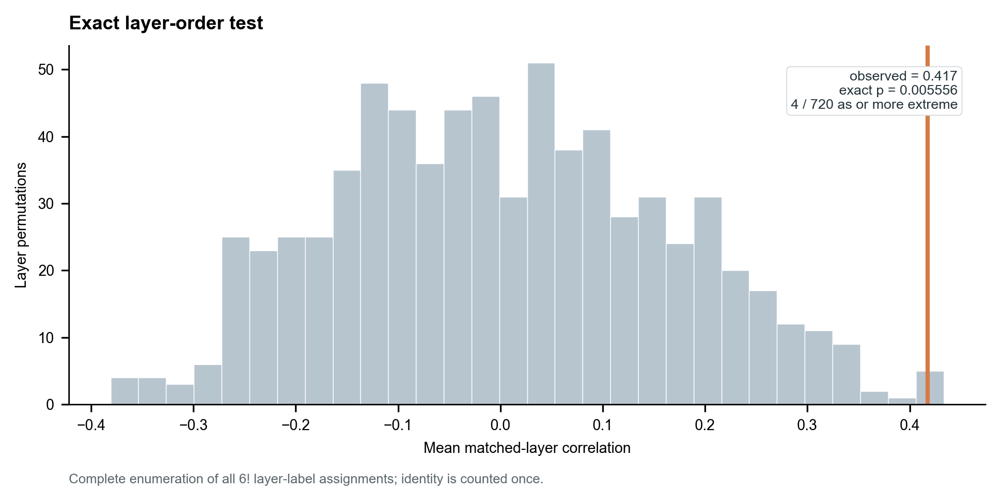
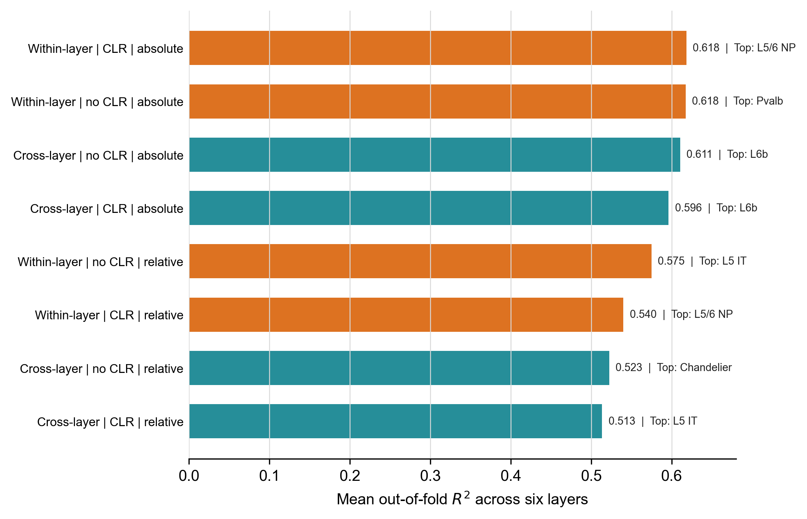
5. 最终 pipeline 的选择与解释
跨层归一化
研究对象是给定细胞类型在六层之间的分配。跨层归一化与六层相对厚度在统计对象上直接对应；平均来看，跨层分支比层内分支增加8.5个FDR发现，mean |r|提高0.0437，但优势主要由无CLR条件驱动。
不使用CLR
跨层归一化后，再对每层细胞类型做CLR会把问题改写为层内细胞类型对数比平衡。在相对厚度条件下，CLR使FDR发现从31降至11，mean |r|从0.4576降至0.2971；这支持保留原跨层分配特征。
相对厚度
相对厚度去除ROI总厚度尺度，突出六层内部厚度构成。在跨层、无CLR条件下，相对厚度较绝对厚度增加10项FDR发现，mean |r|提高0.0491；两者的整体层序检验均为p=0.005556，说明相对化增强局部效应但不是整体层序证据的唯一来源。
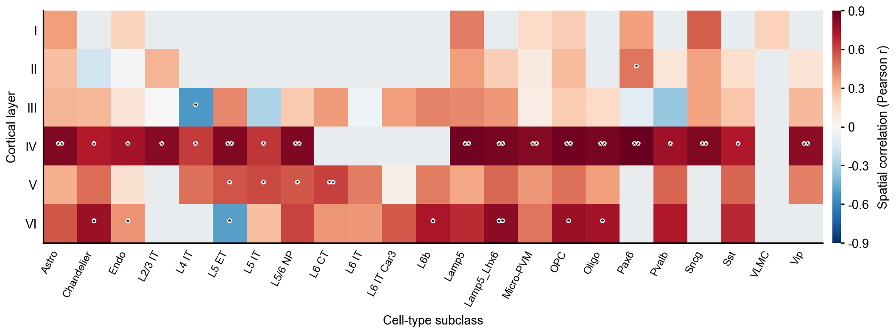
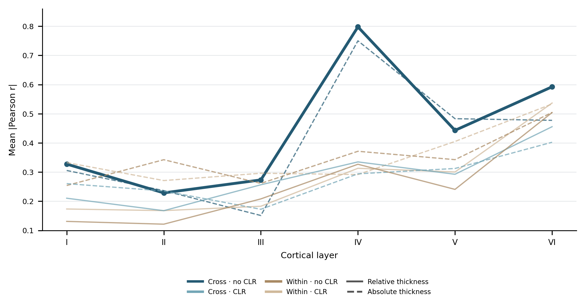
SHAP整体贡献
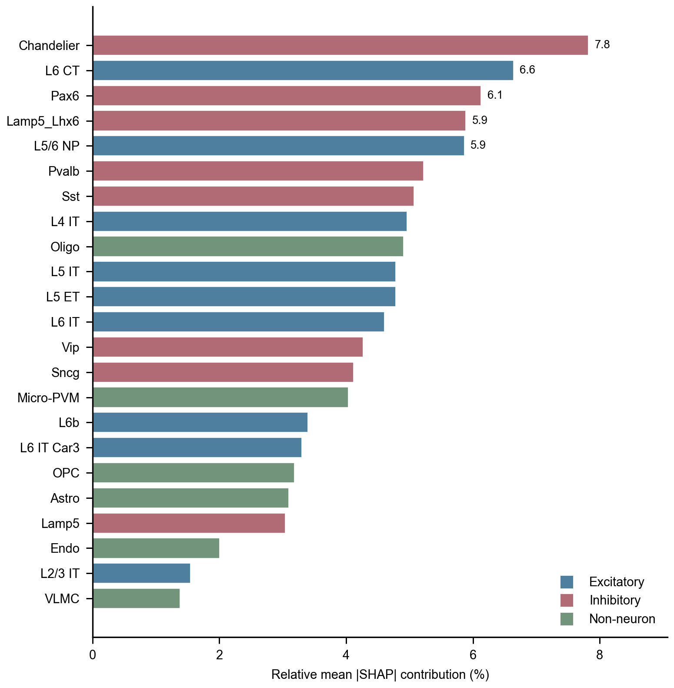
贡献分散表明预测不是由单一细胞类型支配。Chandelier、L6 CT、L5/6 NP、Pax6和Lamp5_Lhx6构成前五，但这些数值仅表示在当前相关特征与Ridge模型中的预测分摊；相关特征间的共享信息可改变SHAP排序，因此不应将其解释为独立生物效应大小。
分层SHAP：贡献来源具有明显的层特异性
上述总体贡献不是将六层堆叠为一个预测任务，而是分别在L1–L6训练六个模型，再对各层SHAP贡献取平均。为避免平均值掩盖层差异，本次进一步保留每层的折外预测、细胞类型贡献和细胞大类贡献。每层均使用105个Brainnetome脑区、五折out-of-fold RidgeCV及训练折内标准化；完整23类组成在relabel后重新闭合，外部mask只决定该层进入模型的细胞类型。
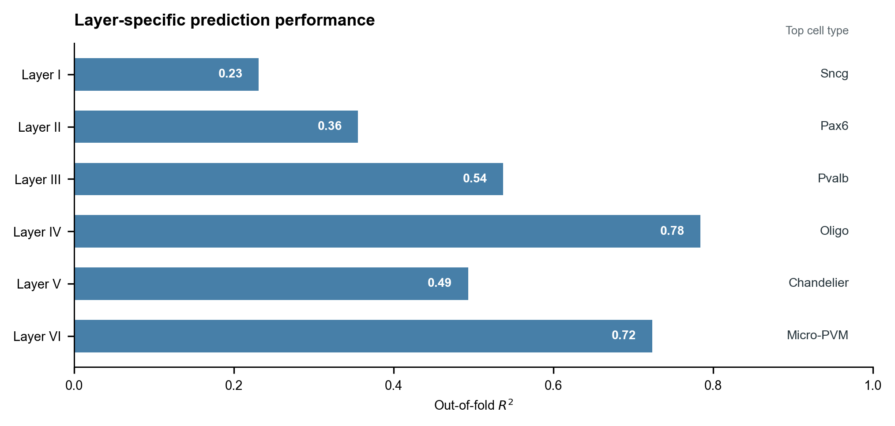
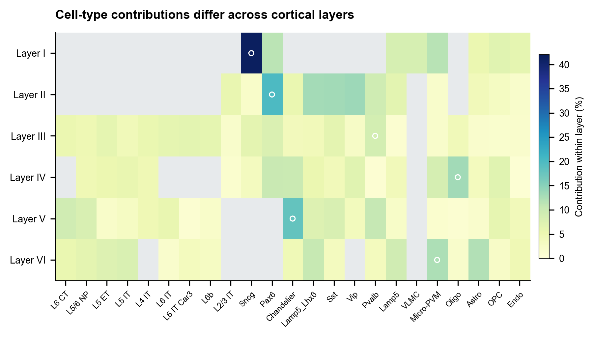
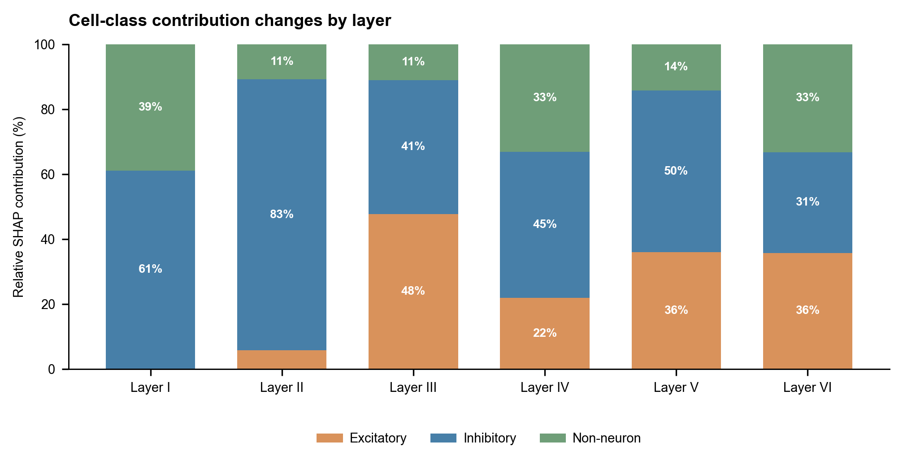
6. 稳健性、替代解释与分析边界
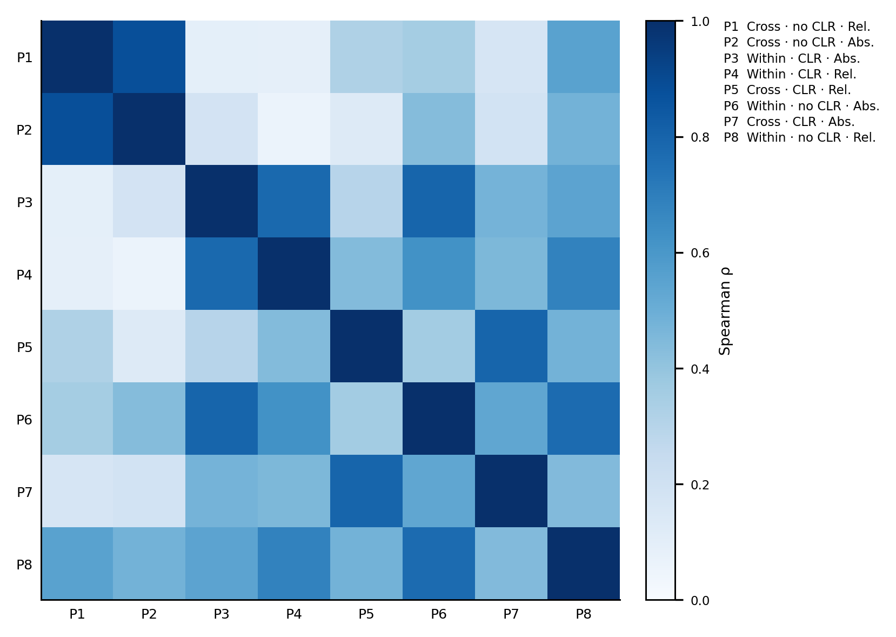
- 探索性选择：八个pipeline使用同一数据比较后按FDR发现数和mean |r|选择最终分支。分支内FDR控制不等于对“八分支搜索”进行校正；独立确认应预先固定pipeline。
- 空间零模型：spin检验控制皮层空间自相关，但结果仍依赖BN分区、所用皮层表面、Alexander–Bloch旋转及仅1,000次旋转所决定的p值分辨率。
- 跨物种映射：原始猕猴细胞类型向人类subclass的同源映射存在多来源与未解析类别；D99→BN映射每层丢弃标签106、118和194。映射误差会传递至相关与SHAP。
- 相关而非因果：层厚度与估计细胞类型分布的空间共变不能确定发育、细胞密度或层厚度变化的因果方向。
- 组成解释：非CLR分支的各特征不是相互独立的绝对效应；未闭合敏感性特征不满足严格闭合，而reclosure主分析已在BN目标空间满足闭合约束。
7. 补充敏感性分支：within-layer + CLR + absolute thickness
该分支具有最高平均OOF R²（0.618）和14项FDR发现，但整体层序统计量为−0.0789，p=0.636111。它说明层内对数比特征可以预测厚度，却不支持六层按正确层序形成整体匹配，因此保留为替代问题定义下的敏感性结果。
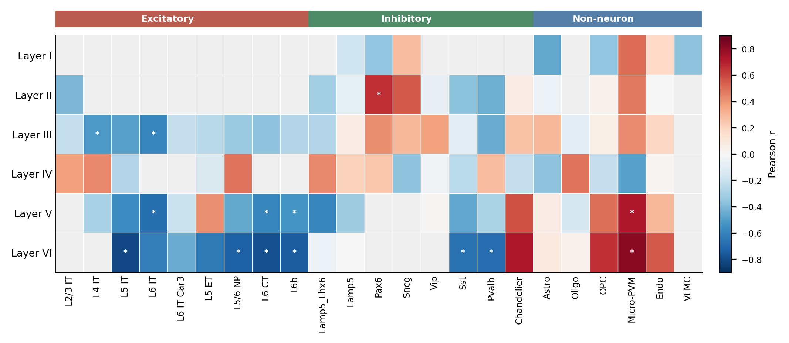
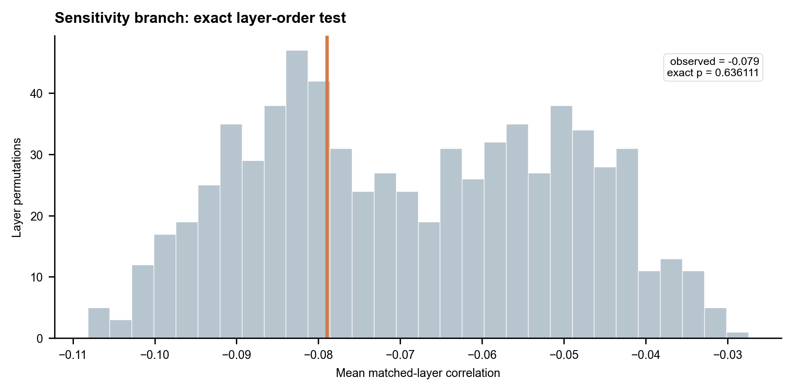
结果解释：可以说什么、不能说什么
支持的解释：同源细胞类型的层间空间分配与人脑皮层相对层厚度之间存在有层次选择性的空间共变；这种对应不是仅由皮层平滑空间梯度造成，因为局部检验使用了空间旋转零模型，整体层序也优于错配层序。
SHAP层面的解释：模型贡献分布较为分散而非由单一细胞类型垄断。重闭合主分支的折外R²为0.5207，平均折外Pearson相关为0.7124；最高单一贡献为Chandelier subclass（相对贡献0.0782），前五项合计0.3233。类别汇总为抑制性0.4155、兴奋性0.3985、非神经元0.1860。它们反映预测依赖度，不表示相应细胞群直接调控厚度。
替代解释：共同发育梯度、皮层层级、髓鞘化、细胞密度、供体和物种差异、图谱边界及跨物种映射误差都可能同时影响两类空间图。当前设计降低了空间自相关和处理流程选择带来的偏差，但不能排除这些混杂。
8. 结论与下一步验证
现有证据支持把“跨层归一化、无CLR、相对厚度”作为后续主分析pipeline：它与层间分配这一科学问题一致，并在局部空间效应、整体正确层序与解释性预测三类证据之间取得最平衡的表现。结果同时划定了明确边界：层内CLR更偏向预测而非正确层序，处理顺序可在Layer IV产生方向反转，且主特征在BN空间不是严格闭合组成。
最有价值的下一步不是继续增加同一数据上的候选pipeline，而是固定当前pipeline，在独立供体或替代人脑层厚度数据上复现31项FDR发现、整体层序统计量和reclosure后的主要SHAP贡献；若目标改为严格的BN组成解释，则应在relabel后重新闭合，并将该版本作为独立、预先定义的分析重新测试。
9. 可复现资源
特征策略汇总 · 逐图相关 · mask审计 · 闭合审计 · 前置验证代码 · Surfplot代码 · 八分支SHAP汇总 · 最终细胞类型贡献 · 图形契约。
报告版本：v11 figure draft更新版；生成日期：2026-08-14。v2及未闭合结果均保留为敏感性与审计依据。
reclosure八分支汇总 · 闭合前后一致性 · 闭合审计 · reclosure SHAP汇总 · 比较图QA · 主图QA。
分层SHAP贡献CSV · 分层模型性能CSV · 细胞大类贡献CSV · 折间稳定性CSV。
Figure draft：文章结果段候选图
新版草案参考纵向流程引导式版面，将方法链和统计证据组织为连续阅读路径：跨物种数据与同源映射、跨层归一化和目标空间reclosure、层–细胞类型关联、代表性空间图、精确层序检验及分层预测。
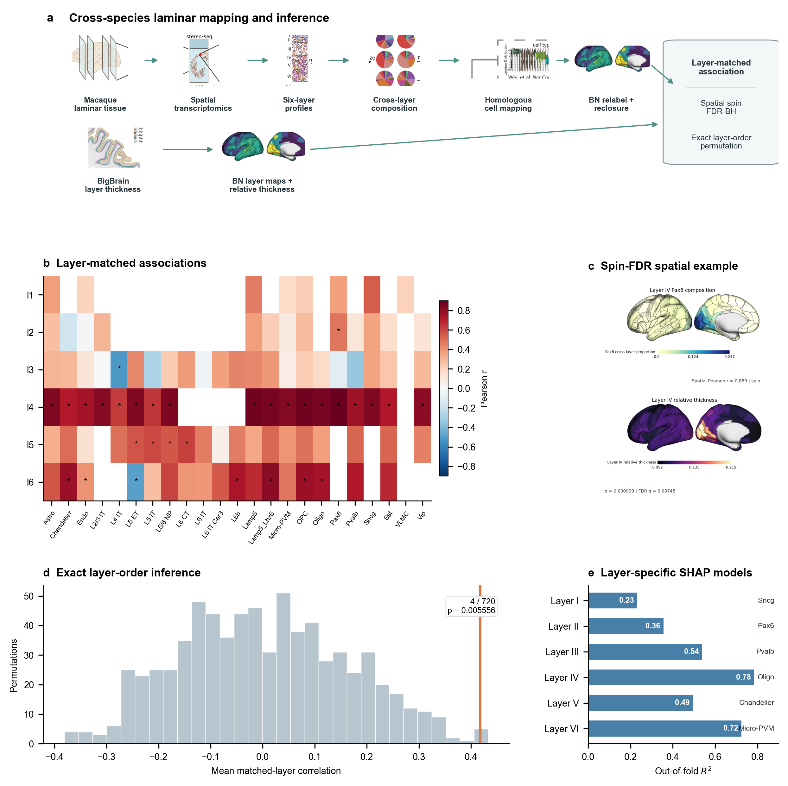
Figure draft SVG · PDF · Surfplot示例 · 脑图源数据 · Figure QA。
{kind=link}
{kind=link}